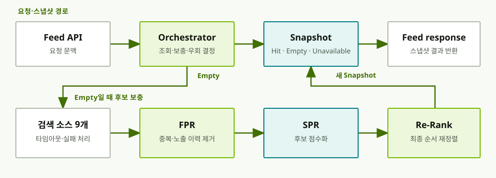

이벤트가 어디서 실패했는지 기록하고, 필요한 업무만 다시 실행했습니다
- 담당
- 이벤트 상태 기록·수동 복구·정체 알림 기능 개발
- 구현
- Kafka로 처리하는 내부 이벤트 9종 · 처리 상태 6개 · 업무별 복구 방식 8개
- 저장
- PostgreSQL에 상태 기록 · JSONB에 payload 저장
- 알림
- IN_PROGRESS 상태가 15분을 넘긴 이벤트를 유형별로 묶어 Slack으로 알림
실패 상태 하나만으로는 어디서 다시 시작해야 할지 알 수 없었습니다
이벤트 발행에 실패한 경우와 발행 후 처리 과정에서 실패한 경우는 확인해야 할 데이터와 복구할 업무가 달랐습니다. 하지만 둘 다 같은 실패 상태로 남았습니다.
실패 상태에 따라 복구할 업무를 나눴습니다
발행 실패와 처리 실패를 구분해 기록했습니다. 저장한 payload로 포인트 차감·회수·만료 알림 중 실패한 업무만 다시 실행하도록 했습니다.
실제 영속성 컨텍스트에서 JPA 오류를 재현하고 약 200만 건을 보정했습니다
Mock 테스트에서는 드러나지 않던 변경 감지 오류를 실제 영속성 컨텍스트에서 재현하고, 보정 스크립트로 잘못 저장된 데이터를 바로잡았습니다.
- 문제
- JPA 변경 감지 오류
- 재현
- 실제 영속성 컨텍스트
- 보정
- 잘못 저장된 데이터 약 200만 건
- 테스트 기반
- Drive-Service 테스트 0개 → 160개 이상
Mock 테스트에서는 오류가 드러나지 않았습니다
기존 Mock 테스트에서는 저장 오류가 재현되지 않아 실제 영속성 컨텍스트에서 저장 과정을 다시 확인해야 했습니다.
오류를 재현한 뒤 보정 스크립트를 작성했습니다
실제 영속성 컨텍스트에서 오류를 재현하고, 보정 스크립트로 잘못 저장된 데이터 약 200만 건을 바로잡았습니다.
중단된 배치를 이어 처리하고 포인트 정합성을 검증했습니다
배치별 재시작 기준을 정하고 요청을 동시에 처리한 뒤 잔액·원장·예산이 맞는지 확인했습니다.
- 담당
- 포인트 소멸 배치의 페이지 단위 처리·아카이브 배치 구현·만료 알림 개선
- 처리 단위
- 소멸 대상을 한꺼번에 읽지 않고 페이지 단위로 반복 처리
- 보관 대상
- 참조 순서대로 옮긴 아카이브 테이블 10개
- 동시성
- 9개 API · 13개 시나리오 · 3·5·10개 동시 요청
세 배치는 중단된 뒤 다시 시작할 기준이 서로 달랐습니다
소멸 배치는 잔액과 원장을 바꾸고, 만료 알림 배치는 발송할 알림을 모았습니다. 아카이브 배치는 참조 순서대로 테이블을 옮겨야 했습니다.
배치별로 재시작 기준을 정했습니다
각 배치의 진행 위치를 따로 기록했습니다. 같은 락 키를 쓰거나 같은 예산을 차감하는 동시 요청이 끝난 뒤에는 잔액·원장·이벤트 수를 확인했습니다.
검색 소스마다 실패를 처리하고 캐시 우회 경로를 만들었습니다
검색 소스마다 정책과 타임아웃, 실패 처리 방식이 달랐습니다. 후보 조회·랭킹·캐시 저장 단계를 구분하고, 각 단계의 입력과 출력을 정리했습니다.
- 처리 순서
- 후보 조회 → 중복 제거 → 점수화 → 재정렬 → 캐시 저장
- 구성
- 후보 수집 인터페이스 · 역방향 조회 방식 · 캐시 3종
- 담당
- 9개 검색 소스의 정책·타임아웃·실패 처리
- 연동
- OpenSearch 조회 연동 · Redis 캐시를 우회하는 경로 · 순환 의존 검출
개인화 피드 처리 흐름 보기

공개한 코드와 글
기술 글 156편과 YouthCon 발표, Spring 오픈소스에 반영된 개선 3건을 한곳에 모았습니다.
YouthCon 2025 발표
‘우리팀을 위한 Spring Test 만들기’ 발표에서 반복되는 테스트 준비 코드를 줄이고 팀의 테스트 작성 규칙을 정한 과정을 다뤘습니다.
기술 글 156편 · 2026.07 기준
Java·JPA·테스트 관련 문제와 SQL 튜닝 경험을 글로 기록했습니다. 글또 10기에서는 준비위원과 연사로 참여했습니다.
Spring 오픈소스 · 개선 제안 3건 반영
Spring Kafka, Spring Boot, Spring Data JPA에 불변 컬렉션 처리 개선, 하드코딩 제거, 자원 정리에 관한 제안을 보냈고 세 건 모두 반영됐습니다.
Java Cafe 기반 OpenSearch 한글 플러그인
Java Cafe Elasticsearch 플러그인을 OpenSearch 2.19에서 동작하도록 Kotlin으로 이식했습니다. 저장소에는 한·영 자판 변환과 초성·자모 검색을 다루는 assertion 예시 16개가 있습니다.
약 7만 건의 삭제 상태 불일치
파일 삭제 상태와 DB 기록이 어긋난 원인을 분석해 글로 남겼습니다.
JPA 오류 재현과 약 200만 건 보정
Mock 테스트에서 드러나지 않던 JPA 변경 감지 오류를 재현하고 보정한 과정을 글로 정리했습니다.